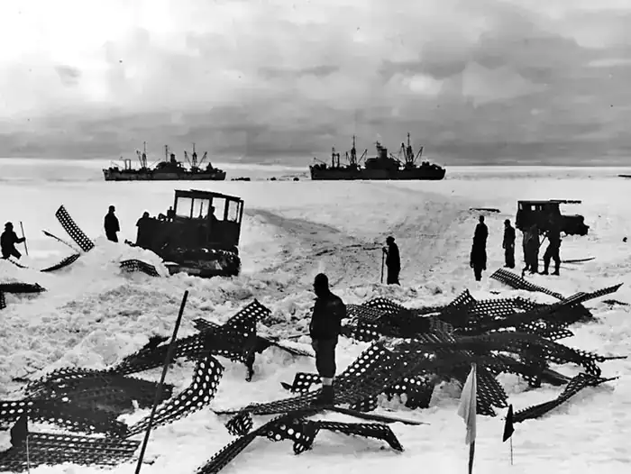
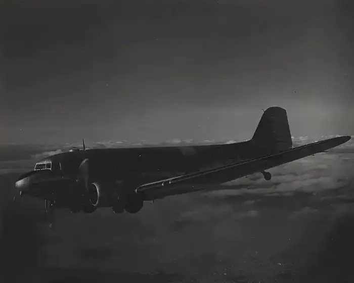
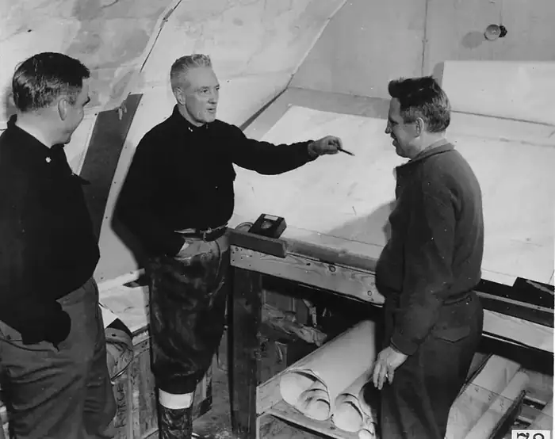

The expedition
Operation Highjump was a US Navy mission to Antarctica in 1946–47, led by Rear Admiral Richard Byrd. It involved about 4,700 personnel, thirteen ships including an aircraft carrier, and aircraft, and its purpose was mapping, training and scientific survey. It was announced publicly in advance.
Maps, diagrams and images






The claim
The fringe reading holds that the expedition was a military operation against a surviving Nazi base, or against extraterrestrials, and that it was defeated or driven off. The evidence offered is a newspaper interview in which Byrd is said to have warned about hostile aircraft near the pole — a quotation that has been reconstructed and embellished in retellings.
The expedition's records are extensive and public: charts, photographs, reports. There is no mention of combat, and the force was not configured for it.
Documented: the expedition, its size, its purpose and its records.
Documented: the public announcement and the scientific output.
Not documented: any engagement, base or enemy.
Not established: the quotation in the form usually given.
The honest label: fringe.
Why it is in the archive
Because it is the best-documented expedition on the shelf and the least mysterious, and the gap between the record and the story is instructive.
Open resources on this topic
- BookThe Operation Highjump Report, 1955 — Amerikaanse marine · 1955 (Internet Archive, free to read)
- BookUnited States. Navy. Task Force 68 Army Observers' Report Of Operation Highjump War Dept ( 1947) — War Department · 1947 (Internet Archive, free to read)
- BookThe Operation Highjump Report, 1955 (Internet Archive, free to read)
- PapersOpen-access articles: DOAJ · PubMed Central · Internet Archive Scholar
- BooksPublic-domain and borrowable copies: Open Library · Project Gutenberg · Google Books
Cite this page
Momin, S. (2026). Operation Highjump. The Larger World Archive. https://drsamonline.github.io/LARGE_GLOBE/operation-highjump.htmlMomin, Sohil. “Operation Highjump.” The Larger World Archive, 2026, https://drsamonline.github.io/LARGE_GLOBE/operation-highjump.html.Momin, Sohil. “Operation Highjump.” The Larger World Archive, 2026. https://drsamonline.github.io/LARGE_GLOBE/operation-highjump.html.@misc{operation2026operation,
author = {Momin, Sohil},
title = {Operation Highjump},
year = {2026},
howpublished = {The Larger World Archive},
url = {https://drsamonline.github.io/LARGE_GLOBE/operation-highjump.html},
note = {Last reviewed 20 November 2026}
}Last reviewed 20 November 2026 · Corrections policy · this page is not peer reviewed
Sources for this page
- Wikipedia, “Operation Highjump” — the expeditionen.wikipedia.org
- Wikipedia, “Richard E. Byrd” — the commanderen.wikipedia.org
- Wikipedia, “Antarctic Treaty System” — the later governanceen.wikipedia.org
- Wikipedia, “New Swabia” — the real German Antarctic claimen.wikipedia.org